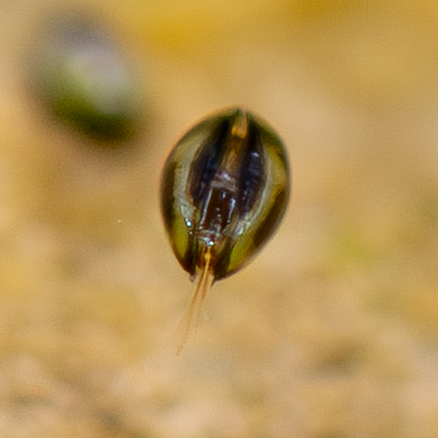
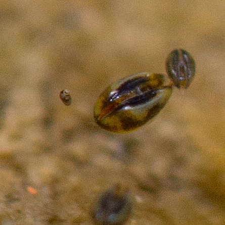
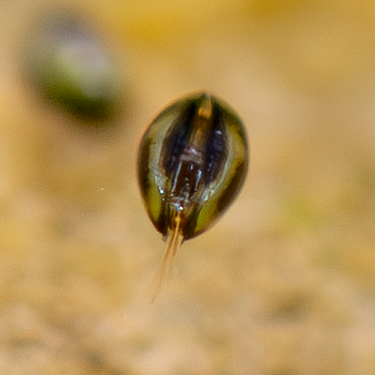
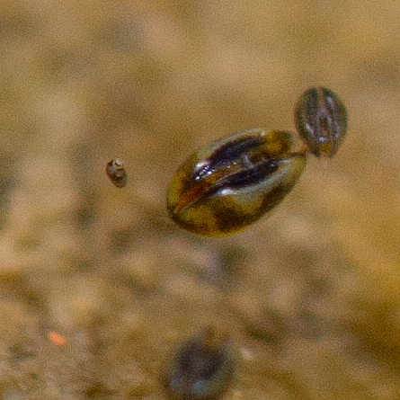

Miscellanea
Myosurus minimus becomes Art
The project on Myosurus minimus was chosen by Hedwig Bäbler to be part of her creative art project
...
Exhibition
Acht botanische Gärten zwischen Vergangenheit und Zukunft - und meine Gedanken dazu -
Hedwig Bäbler, 2025
Photography contest for the iNaturalist BioBlitz of German speaking Botanical Gardens
3rd place for "Most spectacular observation" and 3rd place for "Most beautiful observation"
August 2025
The "Verband Botanischer Gaerten" (Association of Botanical Gardens from the German Speaking regions) organizes a yearly citizen science project focussed on recording the biodiversity in Botanical Gardens. This year, the Botanical Garden of Bern participated in the event, together with other 36 Botanical Gardens. As a passionate naturalist, I did participate to the project too, and two of my observations were awarded the third place for the categories of "Most spectacular observation", and the third place for the category "Most beautiful observation".
The third place "Most spectacular observation" was assigned to a recording of a tiny fresh water Ostrachods (Crustacea), Notodromas monacha. I found the ostracods in the "pond" of the botanical garden, moving around at the shore side. With bare eyes, they look like tiny dark dirt speckles moving around frantically. Indeed, ostracods are also known as "seed shrimps".
 Notodromas monacha , close up">

Notodromas monacha , close up">

The third place "Most beautiful" was assigned to a recording of a Common Globetail, Sphaerophoria scripta, resting on the underside of a fern leaf. The colour of the fly matches with the ripe sporangia, making it a beautiful composition I was lucky enough to capture.

For more information on the BioBlitz 2025 and to see the winners of the contests, click here (German only).
To see thhe iNaturalist project, click here.